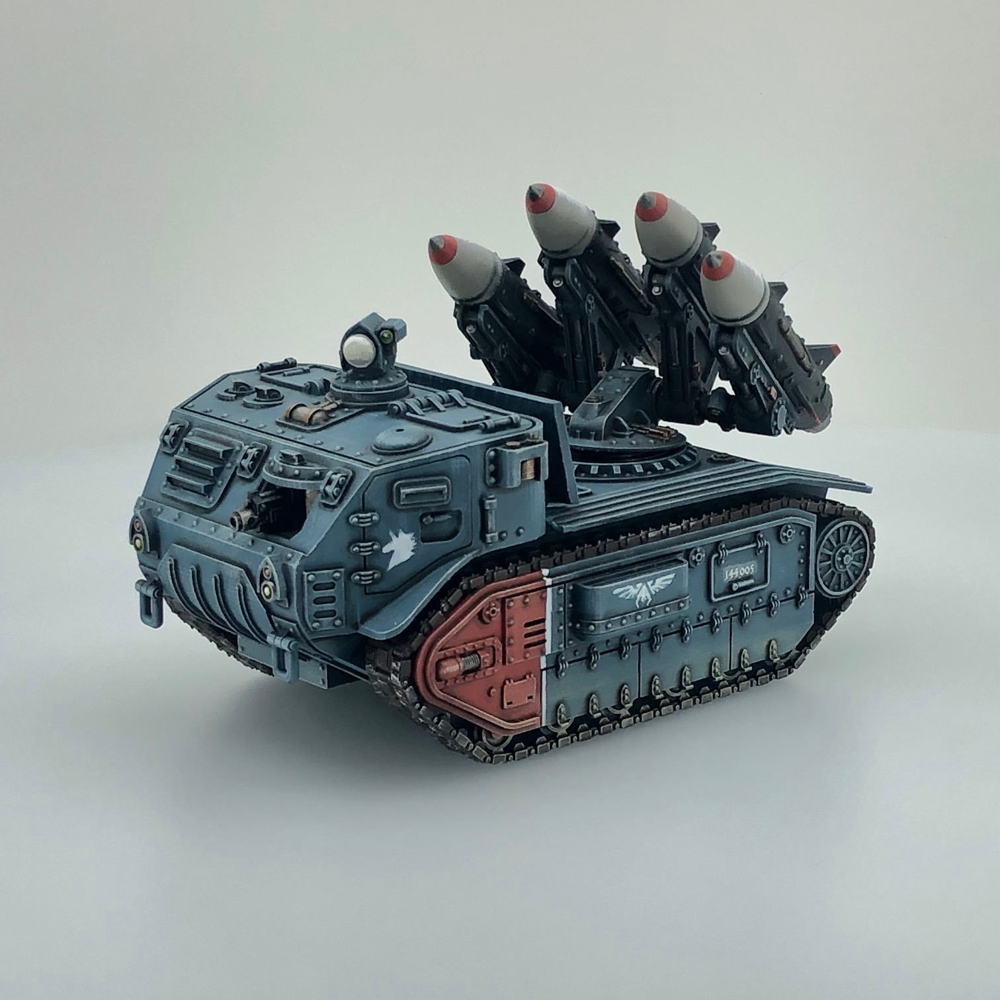

Sphinx Missile Artillery
Sphinix Missile Carriers provide precision heavy strike capability to supplement the saturation bombardments of Catobplepas SPGs and Field Artillery Batteries. Poorly armored and carrying the most basic of self-defense weaponry, these tracked carriers are usually kept far away from the front lines.
Missiles and mount are designed for magnetization, so you can have the glorious experience of making rocket noises as you hand-pilot each missile from launcher to target.
You can download the STL here